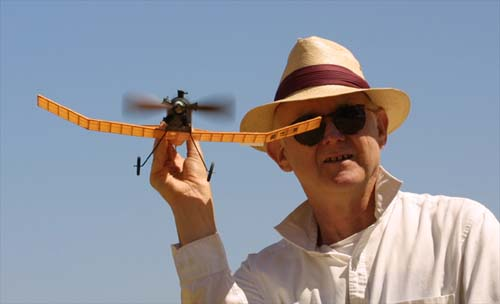
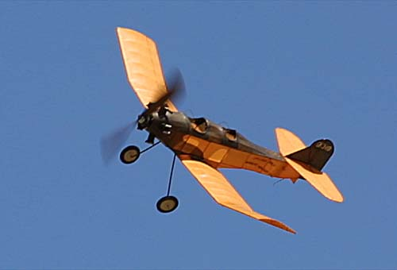

| Jerry built this model several years ago. Despite all appearances, it has proven over time to be very temperamental, providing no end of frustration. Strangely, on the day these pictures were taken, the Nicholas Beasley behaved perfectly, providing great delight as it circled skyward. Hopefully Jerry starched it when he got home. |


Copyright 2001, Thayer Syme. All rights reserved